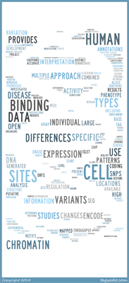

<table width=100%>
<tr>
<td>
<p>
In the modern era of genomics, high-throughput experiments provide molecular biology data that has completely changed how we are able to explore biological systems. 
We can apply computational tools to help answer biological problems that were previously intractable. 
We aim to combine computational approaches with high-throughput biological assays to better understand the whole human transcriptional regulatory system. 
</p>
<br>
<p>
Understanding gene regulation at the transcriptional level is critical to understanding complex biological systems and human disease. In virtually all organisms gene regulation is mediated by a “regulatory code” in which distinct combinations of specific transcription factors collaborate to regulate the expression of individual genes. 
This code is complex and not readily obvious from sequences alone. 
It likely involves many cis-regulatory modules that exist both upstream and within genes. 
In addition, mounting evidence suggests that major differences between individuals and species lie at the level of gene regulation and that changes in cis-regulatory sequences are responsible for these effects. 
</p>
<br>
<p> 
My research aims to explore this regulatory code by examining the non-coding regulatory elements in the human genome. 
I have actively participated in the ENCODE project since 2007 as a member of the analysis working group (AWG) and as a member of both the Snyder and the Furey/Crawford labs. I have more recently been involved in the modENCODE and mouse ENCODE projects. I have had the opportunity to lead a collaborative effort by the modENCODE consortium to perform a final round of regulatory analysis and publish the concluding findings of the project.
</p>
</td>
<td width=200px>
<a href="assets/images/DNA_Cloud.png"></a>
</td>
</tr>
</table>

